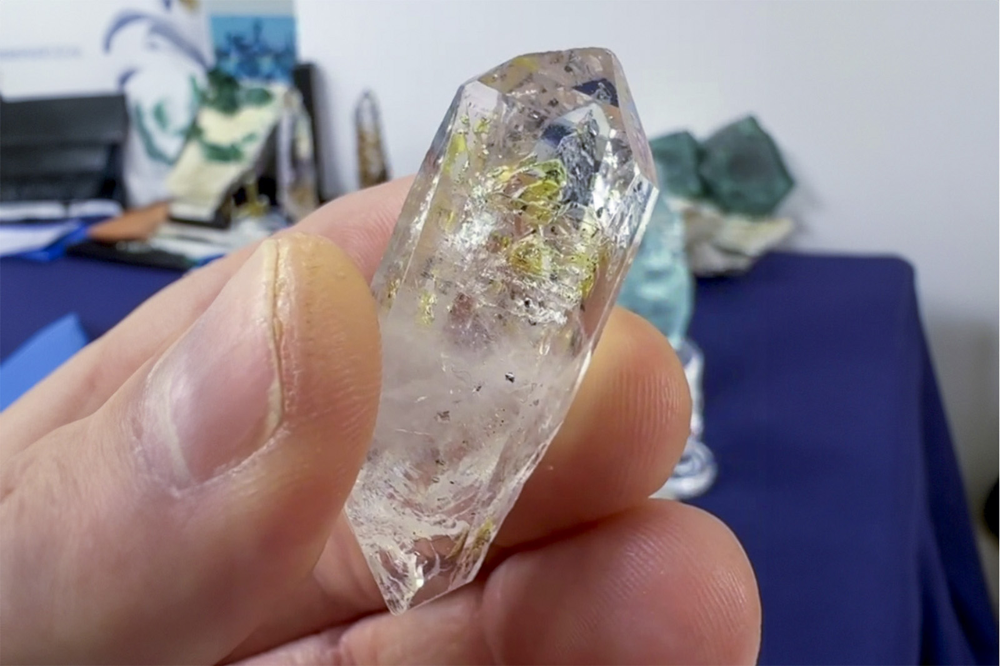

Quartz
"Doubly Terminated Firefly Quartz"
VIII-10812
Madirobe, Besalampy, Melaky, Madagascar
Purchased 8/1/2026 from Dedication Minerals for $30.00
Inventory • In Collection
Details
Storage Type: Flat
Storage Location: 000 Unassigned
Size class: Miniature (0)
Dimensions: 4.5 × 1.5 × 1.4 cm
Mass: 15.56 g
Luster: Average, Vitreous